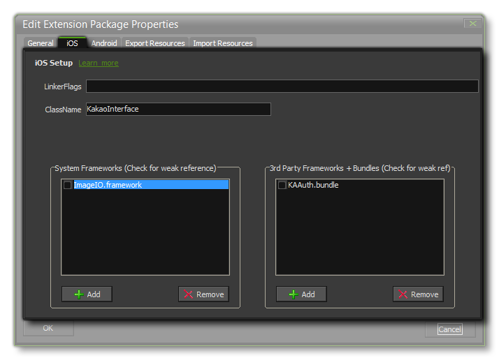

When you create a new extension for your game, you are presented with the Extension Package Properties window from where you can set the basic properties for the extension (see the page Creating Extensions for further details). If your extension is for iOS, you would tick that option too, and clicking on the Next button will open the following tab:  Here you give the following details:
Once that has been set up, you can add in any iOS system frameworks or third party frameworks (see the documentation that came with your chosen SDK for info on the framework name) to your extension. To do this you need to right click
on the extension and select either Add iOS Framework From Mac or Add iOS Source Directory and then browse to the files you wish to add, either from the PC or from your Mac. Added files will be
stored in the iOSSource directory along with your extension. You can open this location at any time by right clicking on the extension and selecting Open Extension Directory.
If your extension requires the use of System Frameworks or 3rd Party Frameworks, these will now be listed in the Extension Properties window, with each one having a check-box beside it. If you mark the check-box,
you are enabling weak linking, which is useful should you need to "over-ride" any symbol from the included library with your own value, but it should be noted that doing so will slow linking down.
To add your functions and constants to the extension package, you must now right click on the extension again and select Add Placeholder. This will create a placeholder file which "links" the functions
you want to add to the extension itself. Once you have added your placeholder, you can then follow the instructions given on the page Creating Extensions to add the
functions and constants it requires. Don't forget to set the export targets for the functions by right-clicking on the placeholder and selecting properties.
You can find a more detailed explanation of the exact steps necessary to create an iOS Extension from the YoYo Games Knowledge Base:
Creating A Native Extension For iOS.